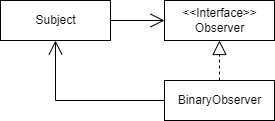
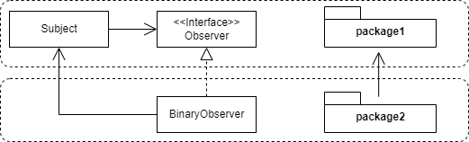
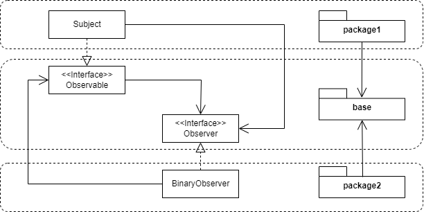

In this article we are going to answer Does the Observer design pattern
have cyclic relationships ?
Indeed, in the following UML diagram Subject depends on Observer
interface and BinaryObserver depends on Subject.

Why it’s an acyclic relationship ?
Break cycle at the class level
According to the book
Java
Application Architecture by Kirk Knoernschild it’s not a cyclic problem
because the ObservaterImpl is a concrete class. Look it !
Break cycle at the module level
Furthermore if we put : - Subject and Observer in the same
module - BinaryObserver in another module, we have an acyclic
relationship at the module level

Take note if we put the interface Observer with this implementation
ObserverImplementation in the same module and Subject class in
an independent module, so we would have a cyclic relationship.
Conclusion
-
Observer design pattern has acyclic dependencies between classes
-
Obersver design pattern has acyclic dependencies between modules
But this isn’t the perfect solution !
Test and deploy package2
The lack of cycle is due to the Dependency inversion applied without having paid attention.
Inverting the relationships allows us to deploy
package2module independent of thepackage1module.
Test and deploy package1
But I’d like to explore another option, the ability to test and
deploy the package1 module independently. It’s not possible yet.
If I want to test and deploy both modules independently, I need to completely eliminate the relationship altogether.

Observer and Observable in Java
So, now we can add a new answer to the question why use Observer
and the Observable (it’s class and not an interface) together ?
Deploy Student class independently of MessageBoard class.
AND
Deploy MessageBoard class independently of Student class.
import java.util.*;
public class MessageBoard extends Observable {
private String message;
public String getMessage() {
return message;
}
public void changeMessage( String message ) {
this.message = message;
setChanged();
notifyObservers( message );
}
public static void main( String [] args ) {
MessageBoard board = new MessageBoard();
Student bob = new Student();
Student joe = new Student();
board.addObserver( bob );
board.addObserver( joe );
board.changeMessage("More Homework!");
}
} // end of class MessageBoard
class Student implements Observer {
public void update(Observable o, Object arg) {
System.out.println( "Message board changed: " + arg );
}
}Code issued from Learning Java, 4th Edition by Patrick Niemeyer, Daniel Leuck online resources.